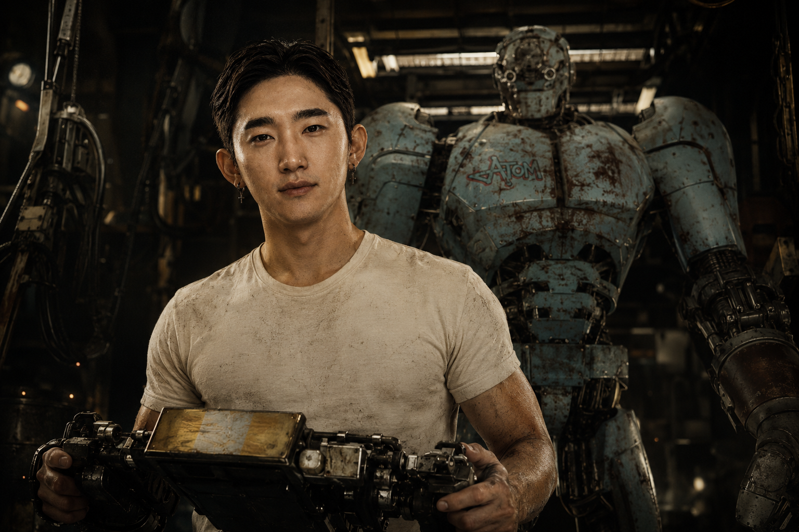
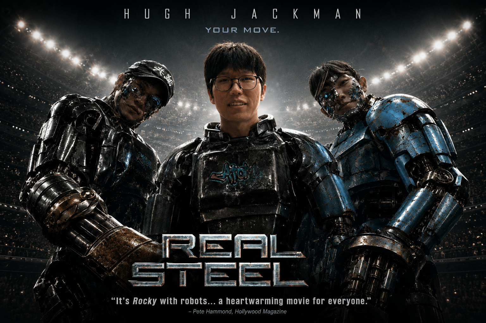
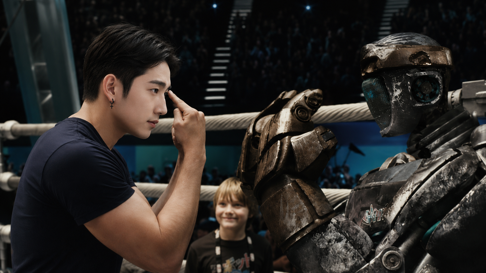
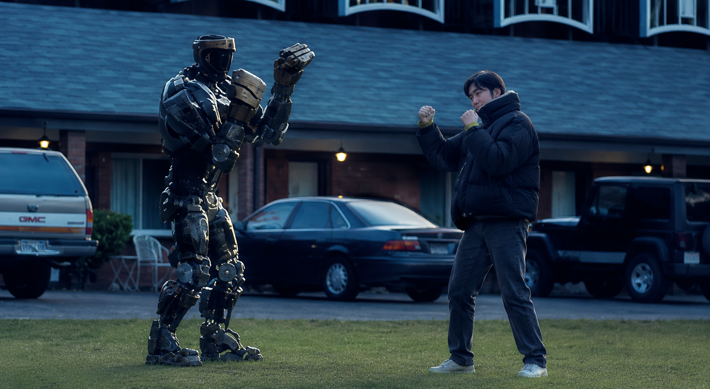

나 자신에 대한 ‘믿음’만 있다면 무엇이든 이뤄낼 수 있다.




숀 레비 · 2001.06.13 · 26년
어릴 적 그는 조용하고 하라는 거 하는 순종적인 아이였다. 학장시절에는 그저 공부만 열심히 했다. 그런 그가 처음으로 하고 싶은 것이 생겼는데 ‘헤어디자이너’였다. 하지만, 쉽지 않았다. 욕을 먹지 않는 날이 없었다. 그렇게 고군분투하다 미용을 그만두게 되고 정신으로 많이 힘들었다. 사람들이 무서워졌고 다시 일어날 수 없었는데 좋은 인생 선생님을 만나 정신이 건강해졌고 다시 사람들을 만나러 ‘밖으로’ 나간다. 그렇게 넘어지다가 다시 일어나 이번에는 ‘그래픽 디자인’이라는 길을 걷고 있다.
임근우